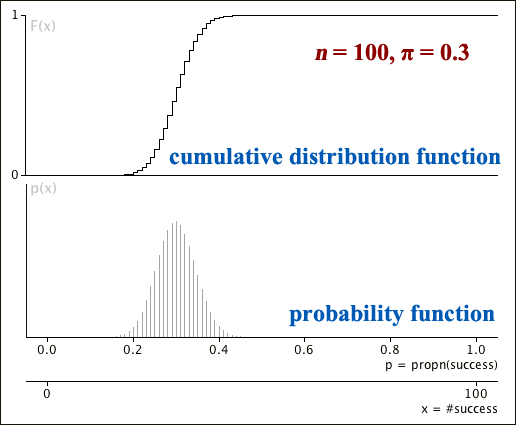

A binomial distribution's cumulative probability at \(x\) is the probability of a value less than or equal to a constant \(x\),
\[ F(x) = P(X \le x) = \sum_{u \le x} {p(u)} = \sum_{u=0}^{\lfloor x \rfloor} {{n \choose u}\pi^x (1-\pi)^{n-x} }\]where \(\lfloor x \rfloor\) denotes the largest integer less than or equal to \(x\). Note that, unlike the probability function \(p(x)\), this is defined for all \(x\), not just for integer values.
Unfortunately there is no simple formula for the cumulative probabilities of the binomial distribution.
When treated as a function of \(x\), this is the distribution's cumulative distribution function (CDF) — a step function that increases by \(p(x)\) at each integer value from 0 to \(n\).
